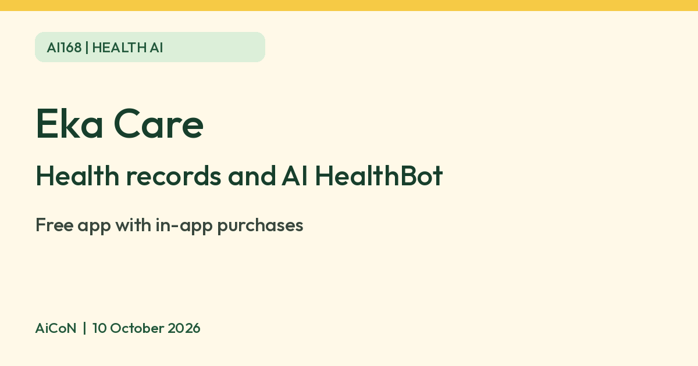

Eka Care: store health records and try an AI HealthBot, and what is free
Eka Care stores your family health records and has an AI HealthBot. The app is free with in-app purchases, and Eka Pass is ₹49 a month in the India iOS listing. It is not a diagnosis.

What it is
Eka Care is an Indian health app. Its App Store India listing says you can create an ABHA number, store medical records, prescriptions and reports for yourself and family, and track vitals. The listing also names two AI features. An AI HealthBot answers health queries and can give insights from your medical records. AI assessments cover health risk, such as diabetes and hypertension, and a symptom check where you enter symptoms like cough or fever.
Is it free
The App Store India listing shows Eka Care as Free with in-app purchases. The in-app purchases listed there are Eka Pass at ₹49 a month in the India iOS listing or ₹449 a year. These are advertised India iOS prices, not a tested checkout quote or a verified Android price. The listing does not say which features need Eka Pass, so check the app before you assume a feature is free. The listing also says the app contains advertising.
Is it available in India
Yes. Eka Care is an Indian app with an App Store India listing, and it supports creating an ABHA, the Ayushman Bharat Health Account. Its patient page says it is ABDM compliant.
Privacy before you upload
Health records can reveal sensitive facts about you and your family. Read the privacy policy and Data controls page first. Eka says the setting "Improve Eka Care's AI models" is on by default and can use anonymized consultation/record data to improve its own models. Personally identifiable information is removed according to its policy; this is the company's description, not our audit. To opt out, find that setting under Data & Privacy before uploading. The Data controls page places it under Profile, while the privacy policy says Settings > Data & Privacy > Privacy; the exact current screen was not tested.
The privacy policy permits sharing with service providers for stated purposes and legal/safety disclosures. It says outside AI providers may process feature requests under no-retention/no-training terms. That is not the same as data staying only on your phone or never leaving Eka.
For deletion, the Data controls page lists Profile > Data & Privacy in the patient app. The policy gives privacy@orbi.health and support@eka.care for rights/support requests. Retention is as long as needed for the purpose or law; withdrawal is not retrospective and does not erase provider-held medical records or records Eka must retain. Account deletion is not a promise to delete every clinical copy everywhere.
Two official pages differ on children's AI-training data: the privacy policy says known under-18 data is not used; Data controls says it may be used only with explicit parent/guardian consent. We could not resolve that difference. Do not rely on an absolute under-18 exclusion; clarify with Eka before uploading a child's records. Get the person's permission before adding an adult family member's records.
How to try it
- Install from the official listing and sign up. The India iPhone listing currently requires iOS 17 or later; Android device requirements were not verified. Review any price/paywall before subscribing.
- Review Data & Privacy and the AI-improvement setting first. If you choose to add records, start with only the information needed. Create/link ABHA only after reviewing the consent shown; a health account is not a promise that every linked service is free.
- Ask a general HealthBot question or try an assessment if available to your account. Check names, dates, values and units against the original report before using a summary. Do not change medicine, doses or treatment based only on AI output.
Limits to know
- AI answers and assessments are information, not a diagnosis. See a doctor for symptoms that worry you, and do not delay care because of an app result.
- You would be uploading health records. We read Eka's privacy policy and Data controls page. Review their AI-improvement, sharing and deletion terms before uploading family records.
- Eka's listing numbers about users and records are the company's own claims.
- We did not test it ourselves.
Frequently asked questions
Is Eka Care free?
The app is free to download, with in-app purchases. Free download does not prove unlimited free HealthBot use or free doctor/lab services. Eka Pass is listed at ₹49 a month in the India iOS listing or ₹449 a year, and the listing does not say what it unlocks.
Can it diagnose me?
No. Treat the app as record organization and information, not a medical decision-maker. Do not delay urgent care because an AI answer sounds reassuring.
Does closing the app delete my records?
No. Use the documented deletion/rights route and check retention exceptions. Keep your original records safely before deleting app copies.
What changed since earlier descriptions?
This guide separates the free download from paid/untested feature access and checks the current AI-improvement controls. Older blanket "private and secure" claims do not replace the detailed policy or resolve the child-data conflict above.
Sources: Eka Care on the App Store India, Eka Care for patients, Eka privacy policy, Eka Data controls. Checked 10 October 2026.